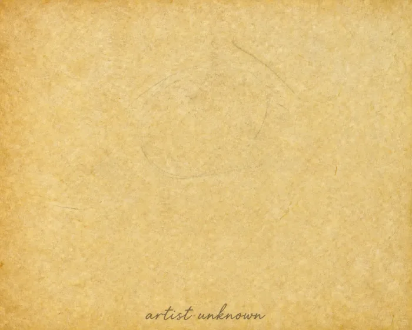

The Registry

The Hodag
Horns, fangs, and a documented appetite for white bulldogs. Rhinelander's own — and the only entry here with a confession attached.
Map Rhinelander, Wisconsin Rhinelander, Wisconsin
Bigfoot
The most-reported creature in the archive by a factor of ten. Big feet, bad photographs, and a great many plaster casts.
Map Pacific Northwest Pacific Northwest
Mothman
Seven feet tall with red eyes, seen for thirteen months over Point Pleasant — a run that ended the night the bridge came down.
Map Point Pleasant, WV Point Pleasant, WV
The Loch Ness Monster
First written down in the year 565, which makes this the oldest file we hold. Fourteen centuries of sonar, submarines and murky water.
Map Loch Ness, Scotland Loch Ness, Scotland
The Jersey Devil
The thirteenth child of Mother Leeds, born 1735. Hooves, wings, and three hundred years of screaming in the Pine Barrens.
Map Pine Barrens, NJ Pine Barrens, NJ
Chupacabra
Drained livestock and a ridge of spines down its back. Most reports, on inspection, resolve into coyotes with mange.
Map Puerto Rico Puerto Rico
The Loveland frog
Creeping along the banks of the Little Miami River, this bizarre four-foot-tall creature walks upright like a human. It features leathery green skin, webbed hands, and a distinct frog-like face. Whether it is a genuine anomaly or a misidentified giant reptile, this elusive swamp-dweller remains a beloved icon of American folklore.
Map Loveland, Ohio Loveland, Ohio